Cuadernillos de trabajo
En esta sección se muestran varios ejemplos de los retos y soluciones explicadas en el documento principal. Se utilizan distintos tipos de modelos (lineales, basados en árboles y otros) y distintas implementaciones (R, keras, xgboost) para mostrar que estos problemas se presentan independientemente de la elección de herramientas particulares.
Los cuadernillos utilizan notación con punto decimal para mantener consistencia con los paquetes que así lo usan. Se utiliza el lenguaje de programación R, y los siguientes paquetes: Wickham (2017), Max Kuhn and Wickham (2020), Hvitfeldt (2020), Max Kuhn, Chow, and Wickham (2020), Max Kuhn and Vaughan (2020a), Max Kuhn and Vaughan (2020b), Vaughan (2020), Max Kuhn (2020), Xie (2019), Pedersen (2019).
Todo el material es reproducible según instrucciones en este repositorio. El repositorio contiene un archivo Dockerfile que describe las dependencias de infraestructura para su replicación.
library(tidyverse)
library(recipes)
library(themis)
library(rsample)
library(parsnip)
library(yardstick)
library(workflows)
library(tune)
library(knitr)
library(patchwork)Mala correspondencia de métrica y objetivos
Usar modelos que predicen la métrica incorrecta puede llevar a tomar decisiones incorrectas. A veces el problema es claro, cuando la métrica sustituto tiene deficiencias obvias, y en otras puede ser más sutil.
En el ejemplo que se muestra a continuación se busca predecir la demanda de cierto producto (pensemos en vacunas o alguna medicina) para poder tomar decisiones de abastecimiento.
Se cuenta con datos históricos de inventario (80 semanas), ventas y una variable predictor asociada a ventas (en el caso de las vacunas podría ser temperatura) y otra de agotamiento del inventario. Separamos los datos en entrenamiento y prueba, ajustando el modelo con el subconjunto de datos de entrenamiento. En este caso se utiliza un modelo lineal con variable dependiente ventas y covariables de semana y la covariable predictor.
entrena <- ventas %>% filter(semana < 60)
prueba <- ventas %>% filter(semana >= 60, semana <= 80)
entrena %>% select(-demanda) %>% head() %>% kable()| semana | inventario | ventas | predictor | agotamiento |
|---|---|---|---|---|
| 1 | 153 | 110 | -27.7014124 | 0 |
| 2 | 170 | 148 | 0.7664636 | 0 |
| 3 | 158 | 130 | -15.2606032 | 0 |
| 4 | 162 | 142 | 4.2461227 | 0 |
| 5 | 159 | 159 | 28.5107593 | 1 |
| 6 | 162 | 162 | 14.8895964 | 1 |
##
## Call:
## lm(formula = ventas ~ semana + predictor, data = ventas)
##
## Coefficients:
## (Intercept) semana predictor
## 140.9935 0.8166 0.5535Evaluamos el error de predicción.
preds <- predict(mod_lineal, newdata = prueba)
round(mean(abs(preds - prueba$ventas))/mean(prueba$ventas), 3)## [1] 0.04El error porcentual es bajo. Los datos ajustados y predicciones se ven como sigue:
preds <- predict(mod_lineal, newdata = ventas)
ventas_larga <- ventas %>% mutate(pred = preds) %>%
pivot_longer(cols = all_of(c("ventas","pred")), names_to = "tipo", values_to = "unidades")
ggplot(ventas_larga %>% mutate(unidades = ifelse(tipo=="ventas" & semana > 80, NA, unidades)),
aes(x = semana, y = unidades, group = tipo, colour = tipo)) +
geom_line() +
geom_vline(xintercept = 80) +
geom_vline(xintercept = 60) +
annotate("text", x = 25, y=105, label = "entrena") +
annotate("text", x = 69, y=105, label = "prueba")## Warning: Removed 20 row(s) containing missing values (geom_path).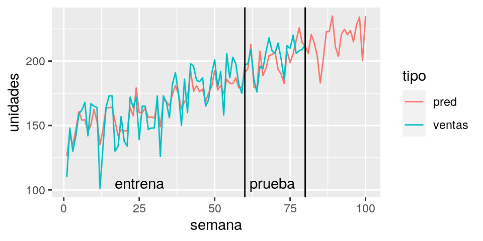
Pero tomar decisiones de demanda o inventario es equivocado. La razón es que existe una diferencia entre la variable ideal (demanda real de medicinas) y la variable observada (venta de medicinas). La diferencia radica en que existen agotamientos de inventario, es decir periodos en los que, aunque existía demanda no había suficiente inventario para todos los compradores. Se ve marcado esto con rojo en la siguiente gráfica.
preds <- predict(mod_lineal, newdata = ventas)
ventas_larga <- ventas %>% mutate(pred = preds) %>%
pivot_longer(cols = all_of(c("ventas","pred")), names_to = "tipo", values_to = "unidades")
ggplot(ventas_larga %>% mutate(unidades = ifelse(tipo=="ventas" & semana > 80, NA, unidades)), aes(x = semana)) +
geom_line(aes(group = tipo, colour = tipo, y = unidades)) +
geom_point(data = filter(ventas, agotamiento==1, semana < 80), aes(y = ventas), colour = "red") +
geom_vline(xintercept = 80) +
geom_vline(xintercept = 60) +
annotate("text", x = 25, y=105, label = "entrena") +
annotate("text", x = 69, y=105, label = "prueba")## Warning: Removed 20 row(s) containing missing values (geom_path).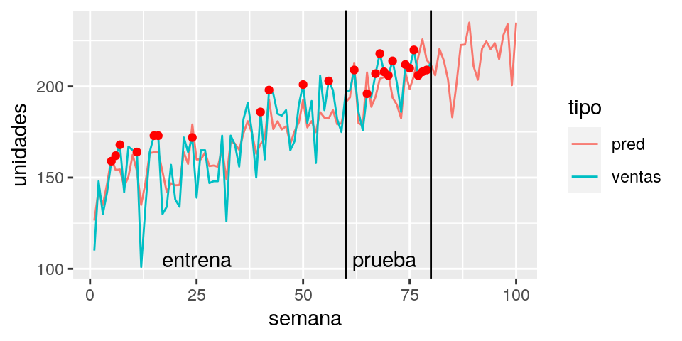
Si usáramos la política sugerida por las predicciones (por ejemplo 5% más), veríamos las ventas de la primera gráfica a continuación. Sin embargo, si usáramos una política de inventario con 280 unidades, observaríamos:
preds <- predict(mod_lineal, newdata = ventas)
ventas_obs <- ventas %>% mutate(pred = preds) %>%
mutate(inventario = 1.05 * pred) %>%
mutate(ventas = ifelse(semana > 80, pmin(inventario, demanda), ventas))
ventas_larga <- ventas_obs %>%
pivot_longer(cols = all_of(c("ventas","pred")), names_to = "tipo", values_to = "unidades")
g1 <- ggplot(ventas_larga, aes(x = semana)) +
geom_line(aes(group = tipo, colour = tipo, y = unidades)) +
geom_point(data = filter(ventas_obs, ventas == inventario, semana > 80), aes(y = ventas), colour = "red") +
geom_vline(xintercept = 80) + labs(subtitle = "Inventario: Predicciones + 5%")preds <- predict(mod_lineal, newdata = ventas)
ventas_obs <- ventas %>% mutate(pred = preds) %>%
mutate(inventario = 280) %>%
mutate(ventas = ifelse(semana > 80, pmin(inventario, demanda), ventas))
ventas_larga <- ventas_obs %>%
pivot_longer(cols = all_of(c("ventas","pred")), names_to = "tipo", values_to = "unidades")
g2 <- ggplot(ventas_larga, aes(x = semana)) +
geom_line(aes(group = tipo, colour = tipo, y = unidades)) +
geom_point(data = filter(ventas_obs, ventas == inventario, semana > 80), aes(y = ventas), colour = "red") +
geom_vline(xintercept = 80)+ labs(subtitle = "Inventario: 300 unidades cte")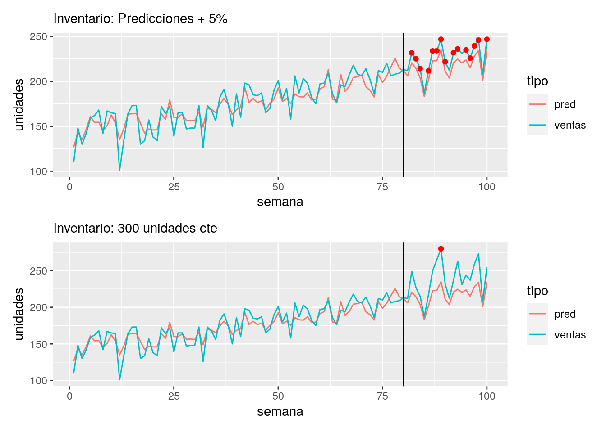
Entonces,
- La política basada en las predicciones exacerba el problema de los agotamientos.
- Un uso no pensado de datos sin considerar el proceso generador de los mismos puede producir errores grandes en las decisiones
- En este caso, la confusión proviene de no separar los conceptos de demanda y ventas. Otros indicadores de demanda o modelos más adecuados ayudarían a resolver el problema.
- Soluciones simplistas como sólo tomar los datos donde no ocurren agotamientos pueden empeorar aún más la situación: incrementan el sesgo (seleccionamos semanas donde las ventas tienden a ser bajas) y reducen la precisión (usamos menos datos).
Muestras naturales y sesgo
Cuando las muestras de entrenamiento son diferentes a las poblaciones, donde se van a aplicar los modelos, existen dificultades en validar correctamente las predicciones.
5.3.1 Muestras naturales: mala representatividad
Para este ejemplo utilizaremos datos de la encuesta nacional de ingresos y gastos en hogares de México (INEGI 2014), para simular un escenario que queremos ejemplificar.
## Parsed with column specification:
## cols(
## .default = col_double(),
## FOLIOVIV = col_character(),
## UBICA_GEO..5 = col_character(),
## EST_DIS..134 = col_character(),
## UPM..135 = col_character(),
## TENEN_NR1 = col_character(),
## TENEN_NR2 = col_character(),
## VEHI1_A = col_character(),
## VEHI2_A = col_character(),
## VEHI3_A = col_character(),
## VEHI4_A = col_character(),
## VEHI5_A = col_character(),
## VEHI6_A = col_character(),
## VEHI7_A = col_character(),
## VEHI8_A = col_logical(),
## VEHI9_A = col_character(),
## EQH1_A = col_character(),
## EQH2_A = col_character(),
## EQH3_A = col_character(),
## EQH4_A = col_character(),
## EQH5_A = col_character()
## # ... with 26 more columns
## )## See spec(...) for full column specifications.## Warning: 2 parsing failures.
## row col expected actual file
## 1192 VEHI8_A 1/0/T/F/TRUE/FALSE 07 'datos/enigh-ejemplo.csv'
## 1398 VEHI8_A 1/0/T/F/TRUE/FALSE 07 'datos/enigh-ejemplo.csv'datos_ingreso <- encuesta_ingreso %>%
mutate(num_focos = FOCOS) %>%
mutate(ingreso_miles = (INGCOR / 1000)) %>%
mutate(tel_celular = ifelse(SERV_2 == 1, "Sí", "No")) %>%
mutate(piso_firme = ifelse(PISOS != 1 | is.na(PISOS), "Sí", "No")) %>%
mutate(lavadora = ifelse(LAVAD != 1 | is.na(LAVAD), "Sí", "No")) %>%
mutate(automovil = VEHI1_N > 0) %>%
mutate(marginacion = fct_reorder(marginación, ingreso_miles, median)) %>%
rename(ocupadas = PEROCU) %>%
rename(educacion_jef = NIVELAPROB) %>%
select(ingreso_miles, num_focos, tel_celular,
marginacion, ocupadas, piso_firme, lavadora, automovil, educacion_jef)ingreso_split <- initial_split(datos_ingreso, prop = 0.7)
entrena <- training(ingreso_split)
prueba <- testing(ingreso_split)Supóngase que interesa estimar el ingreso de los hogares, para ello se usa una encuesta por teléfono celular, más aún, supóngase que solo se accede a zonas que no tienen marginación muy alta.
muestra_sesgada <- filter(entrena,
tel_celular == "Sí",
marginacion=="Muy bajo")
sesgados_split <- initial_split(muestra_sesgada)
entrena_sesgo <- training(sesgados_split)
validacion_sesgo <- testing(sesgados_split)Se construye un modelo lineal para el logaritmo de ingresos con los datos disponibles.
library(splines)
formula <- as.formula("log(ingreso_miles) ~ ns(num_focos, 3) +
ns(ocupadas, 3) + lavadora + automovil + piso_firme +
ns(educacion_jef, 3)")
mod_sesgo <- lm(formula, data = entrena_sesgo)
# tomamos una muestra representativa para comparar, del mismo tamaño que la sesgada
mod_representativa <- lm(formula, data = sample_n(entrena, nrow(entrena_sesgo)))Y se evalúa el error en una muestra de prueba construida con datos con las mismas características sesgadas que los datos de entrenamiento (hogares con teléfono celular y grado de marginación muy bajo).
preds_val <- predict(mod_sesgo, newdata = validacion_sesgo)
mean(abs(preds_val - log(1 + validacion_sesgo$ingreso_miles))) %>% round(2)## [1] 0.37El error en una muestra más similar a la población que se pretende aplicar el algoritmo es mayor:
preds_prueba_sesgo <- predict(mod_sesgo, newdata = prueba)
preds_prueba <- predict(mod_representativa, newdata = prueba)
prueba$pred_sesgada <- preds_prueba_sesgo
prueba$pred_rep <- preds_prueba
mean(abs(preds_prueba_sesgo - log(1 + prueba$ingreso_miles))) %>% round(2)## [1] 0.42Sin embargo, el principal problema se refleja en la siguiente gráfica, donde usamos escalas logarítmicas para hacer comparaciones multiplicativas, que nos interesan por la naturaleza del ingreso. Cada punto representa un hogar, la muestra es más similar a la población donde se aplicará la metodología, y en el eje horizontal graficamos la predicción de los hogares utilizando el modelo, mientras que el eje vertical corresponde al ingreso de cada hogar. Como referencia agregamos la recta \(y = x\), y un suavizador (ver por ejemplo aquí). Nos concetramos en vel el desempeño para los hogares de ingresos relativamente bajos (menos de 10 mil pesos al mes):
breaks_y <- c(3, 5, 10, 20, 40, 80)
g_sesgo <- ggplot(prueba %>% filter(pred_sesgada < log(30)),
aes(x = exp(pred_sesgada), y = ingreso_miles)) +
geom_point(alpha = 0.5) +
geom_abline() + geom_smooth(method = "loess", span = 1) +
scale_x_log10(limits=c(5, 30)) + scale_y_log10(breaks = breaks_y) +
xlab("Predicción (miles al trimestre)") +
ylab("Ingreso corriente (miles al trimestre)") +
labs(subtitle = "Desempeño en prueba \ncon sesgo en entrenamiento")
g_representativa <- ggplot(prueba %>% filter(pred_sesgada < log(30)),
aes(x = exp(pred_rep), y = ingreso_miles)) +
geom_point(alpha = 0.5) +
geom_abline() + geom_smooth(method = "loess", span = 1) +
scale_x_log10(limits = c(5, 30)) + scale_y_log10(breaks = breaks_y) +
xlab("Predicción (miles al trimestre)") +
ylab("Ingreso corriente (miles al trimestre)") +
labs(subtitle = "Desempeño en prueba \ncon muestra representativa en entrenamiento")
g_sesgo + g_representativa## `geom_smooth()` using formula 'y ~ x'
## `geom_smooth()` using formula 'y ~ x'## Warning: Removed 3 rows containing non-finite values (stat_smooth).## Warning: Removed 3 rows containing missing values (geom_point).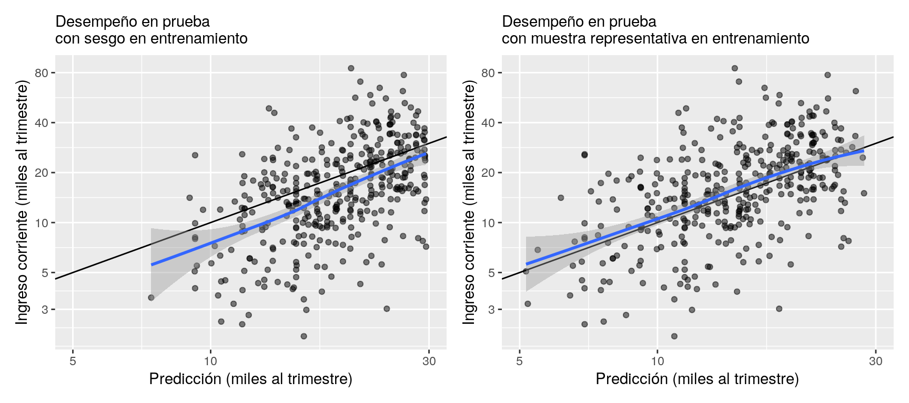
Aunque comunmente esperamos sobrepredecir valores observados relativamente bajos, y lo contrario para valores relativamente altos, para los que tienen ingresos de menos de 10 mil pesos mensuales, el modelo sesgado sobrepredice el ingreso verdadero por alrededor del 40%:
prueba_bajo <- prueba %>% filter(ingreso_miles < 3*10)
sesgo <- mean(exp(prueba_bajo$pred_sesgada))/mean(prueba_bajo$ingreso_miles) - 1
round(sesgo,3)## [1] 0.412Al compararse con el mismo modelo entrenado con una muestra representativa, donde el efecto es considerablemente menor:
prueba_bajo <- prueba %>% filter(ingreso_miles < 3*10)
sesgo <- mean(exp(prueba_bajo$pred_rep))/mean(prueba_bajo$ingreso_miles) - 1
round(sesgo,3)## [1] 0.152Se tienen entonces dos problemas:
- El sesgo produce un error considerablemente más grande en la implementación que en la validación.
- Peor aún, el sesgo es mayor para hogares de menores ingresos (las predicciones son altas), lo cual puede producir una focalización mediocre si buscamos identificar hogares de menores ingresos.
5.3.2 Muestras naturales: comparaciones causales
Este ejemplo está tomado de (Hastie, Tibshirani, and Friedman (2017) y Rossouw et al. (1983)). Consideramos los siguientes datos donde queremos predecir enfermedad del corazón (chd)15:
## Parsed with column specification:
## cols(
## sbp = col_double(),
## tobacco = col_double(),
## ldl = col_double(),
## adiposity = col_double(),
## famhist = col_character(),
## typea = col_double(),
## obesity = col_double(),
## alcohol = col_double(),
## age = col_double(),
## chd = col_double()
## )sa_heart <- sa_heart %>%
rename(presion_arterial = sbp, tabaco = tobacco, colesterol_ldl = ldl,
adiposidad = adiposity, historia_fam = famhist, tipo_a = typea, obesidad = obesity,
edad = age, enf_coronaria = chd)
sa_heart## # A tibble: 462 x 10
## presion_arterial tabaco colesterol_ldl adiposidad historia_fam tipo_a
## <dbl> <dbl> <dbl> <dbl> <chr> <dbl>
## 1 160 12 5.73 23.1 Present 49
## 2 144 0.01 4.41 28.6 Absent 55
## 3 118 0.08 3.48 32.3 Present 52
## 4 170 7.5 6.41 38.0 Present 51
## 5 134 13.6 3.5 27.8 Present 60
## 6 132 6.2 6.47 36.2 Present 62
## 7 142 4.05 3.38 16.2 Absent 59
## 8 114 4.08 4.59 14.6 Present 62
## 9 114 0 3.83 19.4 Present 49
## 10 132 0 5.8 31.0 Present 69
## # … with 452 more rows, and 4 more variables: obesidad <dbl>, alcohol <dbl>,
## # edad <dbl>, enf_coronaria <dbl>## <Analysis/Assess/Total>
## <347/115/462>receta_sa <- training(sa_split) %>%
recipe(enf_coronaria ~ .) %>%
step_dummy(historia_fam) %>%
step_mutate(enf_coronaria = factor(enf_coronaria)) %>%
prep()sa_entrena <- receta_sa %>% juice
sa_boosted <- boost_tree(trees = 3000, mode = "classification",
learn_rate = 0.001, tree_depth = 2,
sample_size = 0.5) %>%
set_engine("xgboost") %>%
fit(enf_coronaria ~ ., data = sa_entrena)Se puede evaluar este modelo y afinar parámetros también. Aquí interesa interpretar el efecto de las variables en este modelo. Para eso se considera la gráfica de dependencia parcial de la prevalencia de enfermedad de corazón y la variable obesidad
##
## Attaching package: 'pdp'## The following object is masked from 'package:purrr':
##
## partialpdp_ob <- pdp::partial(sa_boosted$fit, pred.var = "presion_arterial",
plot = TRUE, plot.engine = "ggplot2", prob = TRUE,
train = sa_entrena %>% dplyr::select(-enf_coronaria))
pdp_ob + xlab("Presión arterial sistólica") + ylab("Predicción promedio")## Warning: Use of `object[[1L]]` is discouraged. Use `.data[[1L]]` instead.## Warning: Use of `object[["yhat"]]` is discouraged. Use `.data[["yhat"]]`
## instead.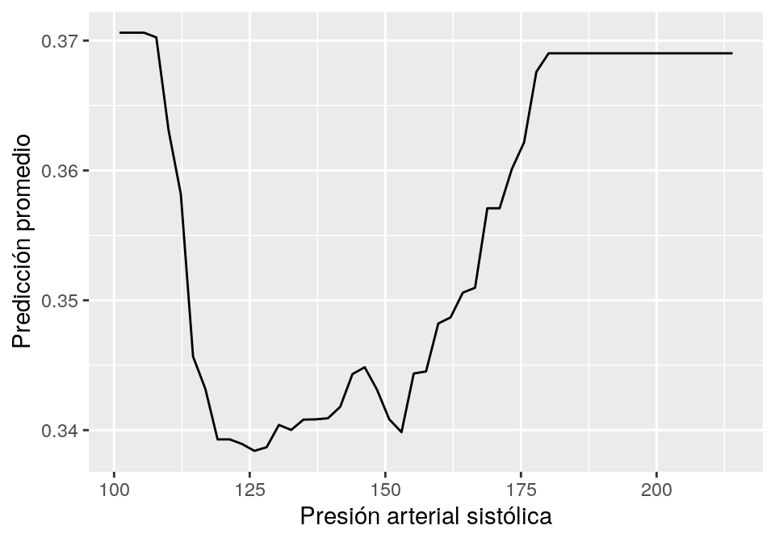
La interpretación correcta de este gráfica de dependencia parcial (ver Hastie, Tibshirani, and Friedman (2017)) depende del hecho de que este es un estudio retrospectivo, donde algunos pacientes con riesgo de enfermedad de corazón sufrieron intervenciones para reducir su riesgo, entre los que está tomar medicinas para reducir la presión. Una interpretación causal de reducciones de la presión arterial como promotora de enfermedades del corazón es incorrecta y potencialmente peligrosa (ver más en Hastie, Tibshirani, and Friedman (2017)).
Desarrollo de los modelos
Fugas Entrenamiento Validación
Se presentarán varios ejemplos de cómo las fugas de entrenamiento a validación producen estimaciones sesgadas del desempeño de predictores.
5.3.3 Selección de variables antes de dividir los datos
Este ejemplo es originalmente de (Hastie, Tibshirani, and Friedman 2017), y se utilizará datos sintéticos, generados con el siguiente proceso:
- Simulando variables respuesta \(y\) con distribución binomial,
- Simulando 1000 covariables independientes, cada una con distribución normal estándar.
simular <- function(n = 100, p = 500, prob = 0.5){
datos <- map(1:p, ~ rnorm(n)) %>%
bind_cols()
datos$y <- rbinom(n, 1, prob)
datos
}
set.seed(8234)
datos_entrena <- simular(n = 200, p = 1000)
datos_prueba <- simular(n = 2000, p = 1000)
dim(datos_entrena)## [1] 200 1001| y | n |
|---|---|
| 0 | 113 |
| 1 | 87 |
La selección de variables está dada por la siguiente función. Esta función selecciona las variables más correlacionadas con la variable objetivo.
seleccionar <- function(datos, num_var = 10){
correlaciones <- datos %>%
pivot_longer(cols = matches("V"), names_to = "variable", values_to = "x") %>%
group_by(variable) %>%
summarise(corr = abs(cor(y, x))) %>%
arrange(desc(corr))
# seleccionar
seleccionadas <- correlaciones %>%
top_n(num_var, wt = corr) %>%
pull(variable)
datos %>% select(one_of(c("y", seleccionadas)))
}Método erróneo
Aquí se ven las 10 variables que fueron seleccionadas, Por sí solo este método no es incorrecto, pero cuando se ejecuta sobre los datos que se usarán en validación (validación cruzada), entonces la estimación de desempeño es optimista:
datos_filtrados <- seleccionar(datos_entrena)
datos_filtrados %>% head %>%
mutate_if(is.numeric, round, 3) %>% kable()| y | V337 | V464 | V984 | V461 | V525 | V732 | V39 | V774 | V491 | V682 |
|---|---|---|---|---|---|---|---|---|---|---|
| 0 | 1.592 | -0.587 | 1.763 | -0.847 | 0.452 | -0.604 | -0.400 | -1.146 | -0.938 | 0.136 |
| 0 | 1.782 | 0.604 | 0.739 | -0.533 | 1.752 | 0.945 | 1.142 | -0.638 | -0.342 | -1.308 |
| 0 | 1.528 | 0.635 | -0.326 | 0.734 | -0.207 | -0.974 | 1.574 | 2.401 | 0.428 | 0.176 |
| 0 | 0.799 | -1.436 | 0.724 | 0.366 | 1.680 | 0.476 | 0.376 | -1.673 | -0.683 | 0.161 |
| 0 | 0.759 | -0.208 | -0.373 | 0.208 | -1.009 | -0.028 | -1.209 | 0.759 | 2.038 | 1.402 |
| 1 | -0.377 | -1.044 | 1.358 | -0.223 | 0.469 | 1.221 | 0.582 | 0.378 | -0.116 | 0.173 |
Para cualquier corte de validación que se haga (ya sea que se separan un conjunto de datos, o hacer validación cruzada), el porcentaje de aciertos parece ser mayor a 0.5:
corte_validacion <- datos_filtrados %>% sample_frac(0.7)
valida <- anti_join(datos_filtrados, corte_validacion)
modelo_1 <- glm(y ~ ., corte_validacion, family = "binomial")
mean(as.numeric(predict(modelo_1, valida) > 0) == valida$y) %>% round(2)## [1] 0.73Sin embargo, el desempeño real del modelo será:
## [1] 0.49Método correcto
La selección de variables debe hacerse en cada vuelta de validación cruzada:
corte_validacion <- datos_entrena %>% sample_frac(0.7)
datos_filtrados_corte <- seleccionar(corte_validacion)
valida <- anti_join(datos_entrena, corte_validacion)
modelo_1 <- glm(y ~ ., datos_filtrados_corte, family = "binomial")
mean(as.numeric(predict(modelo_1, valida) > 0) == valida$y) %>% round(2)## [1] 0.525.3.4 Sobremuestrear antes de particionar
Una de las formas de resolver problemas de desbalance de clases es la técnica de sobremuestreo, sin embargo, se tiene que ser muy cuidadoso para evitar errores de fuga de información al aplicar estas técnicas.
En este ejemplo se verá que sobremuestrear una clase chica antes de separar datos de validación o hacer validación cruzada puede producir estimaciones demasiado optimistas del error de predicción.
Supóngase que tenemos desbalance severo entre nuestras dos clases:
set.seed(99134)
datos_desbalance <- simular(n = 500, p = 20, prob = 0.1) %>%
mutate(y = factor(y, levels = c(1, 0)))
datos_desbalance %>% group_by(y) %>% tally() %>% kable()| y | n |
|---|---|
| 1 | 41 |
| 0 | 459 |
Manera incorrecta
Supóngase que primero aplicamos (SMOTE)(Chawla et al. 2002) para intentar balancear los datos:
receta_balance <- recipe(y ~ ., datos_desbalance) %>%
step_smote(y) %>%
prep()
datos_smote <- juice(receta_balance) Obteniendo así,
| y | n |
|---|---|
| 1 | 459 |
| 0 | 459 |
Ahora se separará entrenamiento y validación
sep_datos_smote <- initial_split(datos_smote)
entrena_smote <- training(sep_datos_smote)
prueba_smote <- testing(sep_datos_smote)Y se genera un método de clasificación usando un bosque aleatorio de árboles de decisión:
metricas <- metric_set(accuracy, recall, precision)
bosque <- rand_forest(trees = 500, mtry = 20, mode = "classification") %>%
set_engine("ranger") %>%
fit(y ~ ., data = entrena_smote)
bosque %>%
predict(prueba_smote) %>%
bind_cols(prueba_smote) %>%
metricas(truth = y, estimate = .pred_class) %>%
mutate_if(is.numeric, round, 3) %>% kable| .metric | .estimator | .estimate |
|---|---|---|
| accuracy | binary | 0.926 |
| recall | binary | 0.973 |
| precision | binary | 0.887 |
En primera instancia parece ser que el desempeño es muy bueno. Se sabe que esto es ficticio, pues no hay relación de \(y\) con el resto de las covariables.
Manera correcta
Antes de hacer el rebalanceo de clases se separa en entrenamiento y validación. Si se quiere, esta parte puede hacerse usando muestreo estratificado, por ejemplo, pero aquí la construimos con muestreo aleatorio simple:
sep_datos <- initial_split(datos_desbalance, prop = 0.5)
entrena <- training(sep_datos)
prueba <- testing(sep_datos)receta_balance <- recipe(y ~ ., data = entrena) %>%
step_smote(y) %>%
prep()
entrena_balanceado <- juice(receta_balance)bosque_1 <- rand_forest(trees = 500, mtry = 20, mode = "classification") %>%
set_engine("ranger") %>%
fit(y ~ ., data = entrena_balanceado)
bosque_1 %>%
predict(prueba) %>%
bind_cols(prueba) %>%
metricas(truth = y, estimate=.pred_class) %>%
mutate_if(is.numeric, round, 3) %>%
kable()| .metric | .estimator | .estimate |
|---|---|---|
| accuracy | binary | 0.828 |
| recall | binary | 0.000 |
| precision | binary | 0.000 |
Aunque el accuracy parece alto, la precisión y la sensibilidad son cero. Un clasificador trivial que siempre predice la clase dominante puede tener mejor exactitud que el que hemos construido.
Fugas en implementación
5.3.5 Variables no disponibles al momento de predicción
En este caso se muestra un ejemplo donde se utiliza erróneamente una variable que no estará disponible al momento de hacer las predicciones (datos de (Greene 2003)).
credito <- read_csv("datos/AER_credit_card_data.csv") %>%
rename(gasto = expenditure, dependientes = dependents, ingreso = income,
edad = age, propietario = owner) %>%
mutate(propietario = fct_recode(propietario, c(si = "yes")))## Parsed with column specification:
## cols(
## card = col_character(),
## reports = col_double(),
## age = col_double(),
## income = col_double(),
## share = col_double(),
## expenditure = col_double(),
## owner = col_character(),
## selfemp = col_character(),
## dependents = col_double(),
## months = col_double(),
## majorcards = col_double(),
## active = col_double()
## )| card | reports | edad | ingreso | share | gasto | propietario | selfemp | dependientes | months | majorcards | active |
|---|---|---|---|---|---|---|---|---|---|---|---|
| yes | 0 | 37.7 | 4.5 | 0.0 | 125.0 | si | no | 3 | 54 | 1 | 12 |
| yes | 0 | 33.2 | 2.4 | 0.0 | 9.9 | no | no | 3 | 34 | 1 | 13 |
| yes | 0 | 33.7 | 4.5 | 0.0 | 15.0 | si | no | 4 | 58 | 1 | 5 |
| yes | 0 | 30.5 | 2.5 | 0.1 | 137.9 | no | no | 0 | 25 | 1 | 7 |
| yes | 0 | 32.2 | 9.8 | 0.1 | 546.5 | si | no | 2 | 64 | 1 | 5 |
| yes | 0 | 23.2 | 2.5 | 0.0 | 92.0 | no | no | 0 | 54 | 1 | 1 |
Se quiere construir un modelo para predecir que solicitudes fueron aceptadas y automatizar el proceso de selección. Se usa una regresión logística con Keras y penalización L2:
set.seed(823)
credito_split <- initial_split(credito)
entrena <- training(credito_split)
prueba <- testing(credito_split)# preparacion de datos
credito_receta <- recipe(card ~ ., credito) %>%
step_normalize(all_numeric()) %>%
step_dummy(all_nominal(), -card)
# modelo
modelo_regularizado <-
logistic_reg(penalty = 1) %>%
set_engine("keras", epochs = 500, verbose = FALSE) %>%
set_mode("classification") # ajustar parametros de preprocesamiento
receta_prep <- credito_receta %>% prep(entrena)
# preprocesar datos
entrena_prep <- bake(receta_prep, entrena)
prueba_prep <- bake(receta_prep, prueba)
# ajustar modelo
ajuste <- modelo_regularizado %>%
fit(card~ gasto + dependientes + ingreso + edad + propietario_si, data = entrena_prep)# evaluar
metricas <- metric_set(accuracy, recall, precision)
ajuste %>% predict(prueba_prep) %>%
bind_cols(prueba) %>%
metricas(truth = factor(card), estimate = .pred_class) %>%
mutate_if(is.numeric, round, 3) %>%
kable()| .metric | .estimator | .estimate |
|---|---|---|
| accuracy | binary | 0.906 |
| recall | binary | 0.667 |
| precision | binary | 0.949 |
Y parece tener un desempeño razonable. Si quitamos la variable expenditure se degrada totalmente el desempeño del modelo:
ajuste_2 <- modelo_regularizado %>%
fit(card~ dependientes + ingreso + edad + propietario_si, data = entrena_prep)
ajuste_2 %>% predict(prueba_prep) %>%
bind_cols(prueba) %>%
metricas(truth = factor(card), estimate = .pred_class) %>%
mutate_if(is.numeric, round, 3) %>%
kable()## Warning: While computing binary `precision()`, no predicted events were detected (i.e. `true_positive + false_positive = 0`).
## Precision is undefined in this case, and `NA` will be returned.
## Note that 84 true event(s) actually occured for the problematic event level, 'no'.| .metric | .estimator | .estimate |
|---|---|---|
| accuracy | binary | 0.745 |
| recall | binary | 0.000 |
| precision | binary | NA |
La sensibilidad es muy mala y la precisión no se puede calcular pues el modelo no hace predicciones positivas para el conjunto de prueba.
La razón de esta degradación en el desempeño es que gasto se refiere a uso de tarjetas de crédito. Esto incluye la tarjeta para la que queremos hacer predicción de aceptación:
| algun_gasto | card | n |
|---|---|---|
| FALSE | no | 212 |
| FALSE | yes | 19 |
| TRUE | yes | 759 |
Lo que indica que algún gasto probablemente incluye el gasto en la tarjeta actual, y la variable gasto es medida posteriormente a la entrega de la tarjeta:
- El desempeño de este modelo para nuevas aplicaciones será muy malo, pues la variable gasto, en el momento de la aplicación, evidentemente no cuenta cuánto va a gastar cada cliente en el futuro.
Evaluación de punto de corte
Las mejores decisiones de punto de corte pueden hacerse con análisis de costo beneficio, con curvas tipo lift basadas en ganancias y pérdidas de cada decisión. Aunque esta información muchas veces no está disponible, es la situación ideal para evaluar cómo ayuda el modelo y cuánto valen las acciones que pretendemos tomar. Es posible hacer este análisis con valores inciertos de costo beneficio.
Supóngase que estamos pensando en un tratamiento para retener estudiantes en algún programa de entrenamiento o mejora.
- El tratamiento de retención cuesta 5000 pesos por alumno,
- Estimamos mediante experimentos o algún análisis externo que nuestro tratamiento reduce la probabilidad de abandono en un 60%,
- Tenemos algún tipo de valuación del valor social de que un alumno persista en el programa.
Podemos evaluar a nuestro modelo en el contexto del problema de las siguiente forma:
- Suponemos que trataremos a un porcentaje de los estudiantes con mayor probabilidad de rotar.
- Calculamos el costos esperado si tratamos a un porcentaje de los estudiantes: simulamos reduciendo su probabilidad de abandono por el tratamiento y sumamos los costos de tratarlos.
- Comparamos contra el escenario de no aplicar ningún tratamiento
No es necesario usar medidas muy técnicas para dar un resumen de cómo nos puede ayudar el tratamiento y modelo para mantener el valor de la cartera:
ggplot(filter(perdidas_sim, tipo=="Tratamiento modelo"),
aes(x = factor(corte), y = - perdida / 1e6)) +
geom_boxplot() + ylab("Ganancia incremental (millones)") +
xlab("Corte inferior de tratamiento (probabilidad)") +
labs(subtitle = "Ganancia vs ninguna acción") + theme_minimal()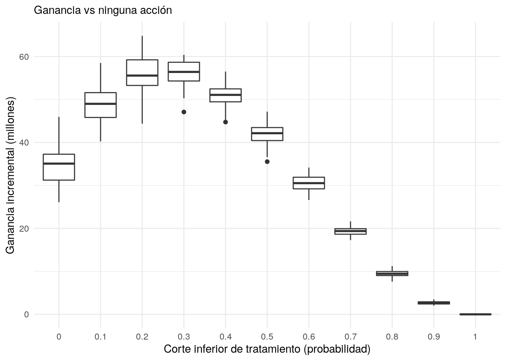
Se puede escoger un punto de corte entre 0.2 y 0.3, por ejemplo, o hacer más simulaciones para refinar la elección.
Si se quiere separar el efecto del tratamiento con el efecto del tratamiento aplicado según el modelo, se puede comparar con la acción que consiste en tratar a los estudiantes al azar:
ggplot(perdidas_sim, aes(x = factor(corte), y = - perdida / 1e6,
group = interaction(tipo, corte), colour = tipo)) +
geom_boxplot() + ylab("Ganancia incremental (millones)") +
xlab("Corte inferior de tratamiento (probabilidad)") +
labs(subtitle = "Ganancia vs ninguna acción") + theme_minimal()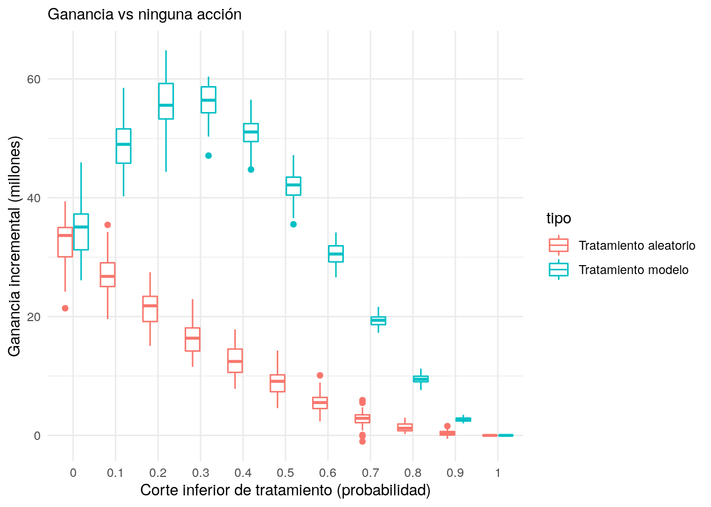
- La conclusión es que el modelo ayuda considerablemente a la focalización del programa (el área entre las dos curvas mostradas arriba).
Desbalance de clases
Cuando se tiene un desbalance severo de clases podemos enfrentar dos problemas: existen en términos absolutos muy pocos elementos de una clase para poder discriminarla de manera efectiva (aún cuando se tengan los atributos o features correctos), o métodos usuales de evaluación de predicción son deficientes para evaluar el desempeño de predicciones.
Considérense los siguientes datos (del paquete de James et al. (2017)):
“Los datos contienen 5.822 registros de clientes reales. Cada registro consta de 86 variables, que contienen datos sociodemográficos (variables 1-43) y de propiedad del producto (variables 44-86). Los datos sociodemográficos se derivan de los códigos postales. Todos los clientes que viven en zonas con el mismo código postal tienen los mismos atributos sociodemográficos. La variable 86 (Compra) indica si el cliente adquirió una póliza de seguro de caravanas” (James et al. (2013))16
Se quiere predecir la variable Purchase:
caravan <- read_csv("datos/caravan.csv") %>%
mutate(MOSTYPE = factor(MOSTYPE),
MOSHOOFD = factor(MOSHOOFD)) %>%
mutate(Compra = fct_recode(Purchase, si = "Yes", no = "No")) %>%
mutate(Compra = fct_rev(Compra)) %>%
select(-Purchase)## Parsed with column specification:
## cols(
## .default = col_double(),
## Purchase = col_character()
## )## See spec(...) for full column specifications.## [1] 5822## # A tibble: 2 x 3
## Compra n pct
## <fct> <int> <dbl>
## 1 si 348 5.98
## 2 no 5474 94.0Esta es la distribución natural de respuesta que se ve en los datos, y se tiene relativamente pocos datos en la categoría “Si”.
Se usará muestreo estratificado para obtener proporciones similares en conjuntos de entrenamiento y prueba:
## <Analysis/Assess/Total>
## <5240/582/5822>Y se usará regresión logística (lo mismo aplica para otros métodos que produzcan probabilidades de clase, como boosting, árboles aleatorios o redes neuronales):
library(tune)
# preparacion de datos
caravan_receta <- recipe(Compra ~ ., entrena) %>%
step_dummy(all_nominal(), -Compra)
caravan_receta_prep <- caravan_receta %>% prep
# modelo
modelo_log <-
logistic_reg() %>%
set_engine("glm") %>%
set_mode("classification") %>%
fit(Compra ~ ., data = caravan_receta_prep %>% juice)## Warning: glm.fit: fitted probabilities numerically 0 or 1 occurredAnálisis incorrecto
La matriz de confusión de entrenamiento es
predictions_ent_glm <- modelo_log %>%
predict(new_data = juice(caravan_receta_prep)) %>%
bind_cols(juice(caravan_receta_prep) %>% select(Compra))
predictions_ent_glm %>%
conf_mat(Compra, .pred_class)## Truth
## Prediction si no
## si 6 9
## no 299 4926Y los de prueba:
prueba_procesado <- bake(caravan_receta_prep, prueba)
predictions_glm <- modelo_log %>%
predict(new_data = prueba_procesado) %>%
bind_cols(prueba_procesado %>% select(Compra))
predictions_glm %>%
conf_mat(Compra, .pred_class)## Truth
## Prediction si no
## si 0 4
## no 43 535Y se obtiene un desempeño pobre según esta matriz de confusión (prueba y entrenamiento). La sensibilidad es muy baja, aunque la especificidad (tasa de correctos negativos) sea alta. Una conclusión típica es que el modelo no tiene valor predictivo, o que es necesario sobre muestrear la clase de ocurrencia baja.
Análisis correcto
En lugar de empezar con sobre/sub muestreo, que modifica lsas proporciones naturales de las categorías en los datos, podemos trabajar con probabilidades en lugar de predicciones de clase con punto de corte de 0.5.
Por ejemplo, podemos visualizar con una curva ROC (o curva lift, precisión-recall, o alguna otra similar que tome en cuenta probabilidades):
predictions_prob <- modelo_log %>%
predict(new_data = prueba_procesado, type = "prob") %>%
bind_cols(prueba_procesado %>% select(Compra)) %>%
select(.pred_si, Compra)## Warning in predict.lm(object, newdata, se.fit, scale = 1, type = if (type == :
## prediction from a rank-deficient fit may be misleadingdatos_roc <- roc_curve(predictions_prob, Compra, .pred_si)
autoplot(datos_roc) +
xlab("1 - especificidad") + ylab("sensibilidad")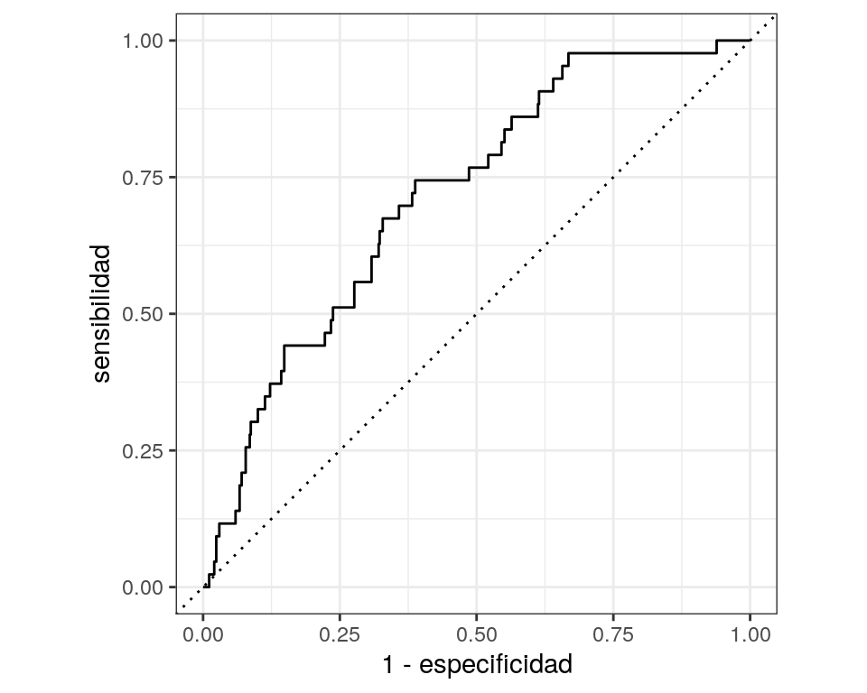
Donde se ve que es posible alcanzar buenos niveles de sensibilidad si se acepta alguna degradación en la especificidad, que originalmente es muy alta. Por ejemplo, cortando en 0.05 se puede obtener especificidad y sensibilidad que posiblemente sean adecuadas para el problema:
## # A tibble: 2 x 3
## .threshold specificity sensitivity
## <dbl> <dbl> <dbl>
## 1 0.0399 0.553 0.744
## 2 0.0399 0.555 0.744¿Qué pasa si hacemos sub/sobremuestreo?
Sobremuestreamos:
caravan_receta_smote <- recipe(Compra ~ ., entrena) %>%
step_dummy(MOSTYPE, MOSHOOFD) %>%
step_smote(Compra)
smote_prep <- prep(caravan_receta_smote)
# modelo
entrena_1 <- juice(smote_prep)
entrena_1 %>% count(Compra)## # A tibble: 2 x 2
## Compra n
## <fct> <int>
## 1 si 4935
## 2 no 4935modelo_log_smote <-
logistic_reg() %>%
set_engine("glm") %>%
set_mode("classification") %>%
fit(Compra ~ ., data = entrena_1)## Warning: glm.fit: fitted probabilities numerically 0 or 1 occurredEn entrenamiento la matriz de confusión es aparentemente mejor:
predictions_ent_glm <- modelo_log_smote %>%
predict(new_data = entrena_1) %>%
bind_cols(entrena_1 %>% select(Compra))
predictions_ent_glm %>%
conf_mat(Compra, .pred_class)## Truth
## Prediction si no
## si 3854 1271
## no 1081 3664Pero en prueba los resultados son muy similares. Se agrega también el modelo construido submuestreando la clase dominante:
entrena_sub <- caravan_receta %>% step_downsample(Compra) %>% prep() %>% juice
modelo_log_sub <-
logistic_reg() %>%
set_engine("glm") %>%
set_mode("classification") %>%
fit(Compra ~ ., data = entrena_sub)## Warning: glm.fit: fitted probabilities numerically 0 or 1 occurredpredictions_prob <- modelo_log_smote %>%
predict(new_data = prueba_procesado, type = "prob") %>%
bind_cols(prueba_procesado %>% select(Compra)) %>%
select(.pred_si, Compra)## Warning in predict.lm(object, newdata, se.fit, scale = 1, type = if (type == :
## prediction from a rank-deficient fit may be misleadingpredictions_prob_sub <- modelo_log_sub %>%
predict(new_data = prueba_procesado, type = "prob") %>%
bind_cols(prueba_procesado %>% select(Compra)) %>%
select(.pred_si, Compra)## Warning in predict.lm(object, newdata, se.fit, scale = 1, type = if (type == :
## prediction from a rank-deficient fit may be misleadingdatos_roc_smote <- roc_curve(predictions_prob, Compra, .pred_si)
datos_roc_sub <- roc_curve(predictions_prob_sub, Compra, .pred_si)
datos_roc_comp <- bind_rows(datos_roc %>% mutate(tipo = "natural"),
datos_roc_smote %>% mutate(tipo = "con sobre muestreo"),
datos_roc_sub %>% mutate(tipo = "con sub muestreo")
)
ggplot(datos_roc_comp,
aes(x = 1 - specificity, y = sensitivity, colour = tipo)) +
geom_path() +
geom_abline(lty = 3) +
coord_equal() +
theme_bw()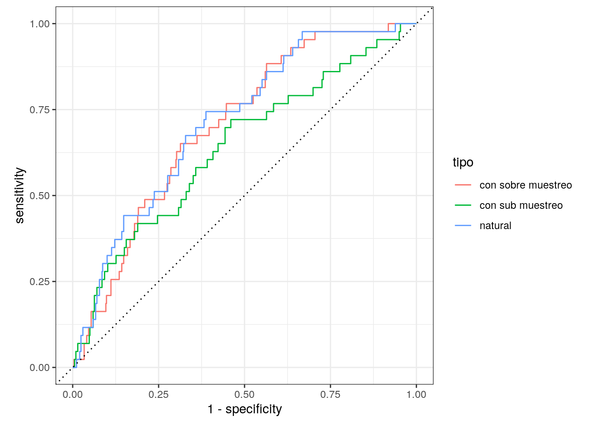
El problema original no era que el ajuste no funcionaba, sino que evaluamos el punto de corte incorrecto. Un punto de corte de 0.5 con SMOTE equivale a uno mucho más chico sin SMOTE.
Peor aún, las probabilidades del modelo construido con sobremuestreo no reflejan las tasas de ocurrencia de la respuesta que nos interesa, lo cual puede producir resúmenes engañosos de las tasas de respuesta que esperamos observar en producción.
Equidad con atributos protegidos
El siguiente ejemplo es derivado de (Hardt, Price, and Srebro (2016)). Supongamos que tenemos un atributo protegido \(A\) que tiene dos valores: azul y naranja. Naranja es el grupo minoritario desaventajado. Usaremos datos simulados como sigue: el atributo score está asociado al atributo protegido:
inv_logit <- function(x){
1 / (1 + exp(-x))
}
simular_datos <- function(n = c(10000, 2000)){
score_azul <- pmax(rnorm(n[1], 50, 10), 0)
score_naranja <- pmax(rnorm(n[2], 40, 10), 0)
azul <- tibble(tipo = "azul", score = score_azul)
naranja <- tibble(tipo = "naranja", score = score_naranja)
datos <- bind_rows(azul, naranja) %>%
mutate(coef_0 = ifelse(tipo == "azul", 0.0, 0),
prob_real_pos = inv_logit(-1 + coef_0 + 0.1 * (score-40))) %>%
mutate(atr_1 = rpois(nrow(.), 3))
datos %>% select(-coef_0) %>%
mutate(paga = map_dbl(prob_real_pos, ~ rbinom(1, 1, .x))) %>%
select(-prob_real_pos)
}
set.seed(1221)
tbl_datos <- simular_datos()Una gráfica de conteos para el score se obtiene un grupo minoritario con valores de la variable score más baja:
## `stat_bin()` using `bins = 30`. Pick better value with `binwidth`.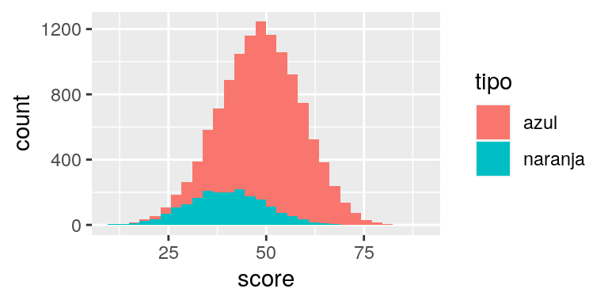
Se ajusta un modelo simple de regresión logística:
reg_log <- glm(paga ~ score + atr_1 + tipo, tbl_datos, family = "binomial")
tbl_datos <- tbl_datos %>% mutate(prob_pos = predict(reg_log, type = "response"))Las tasas reales de cumplimiento son iguales para los dos grupos. En primer lugar, se considera una estrategia donde se aplica el mismo punto de corte para todos los grupos
resultado_cortes <- function(tbl_datos, cortes){
resultado <- tbl_datos %>%
mutate(recibe = ifelse(tipo == "azul", prob_pos > cortes[1], prob_pos > cortes[2]),
decision = ifelse(recibe, "Aceptado", "Rechazado"))
resultado %>% group_by(tipo, decision, paga) %>% count() %>%
ungroup()
}
resultados_conteo <- resultado_cortes(tbl_datos, c(0.6, 0.6))
resultados_conteo## # A tibble: 8 x 4
## tipo decision paga n
## <chr> <chr> <dbl> <int>
## 1 azul Aceptado 0 905
## 2 azul Aceptado 1 2400
## 3 azul Rechazado 0 4149
## 4 azul Rechazado 1 2546
## 5 naranja Aceptado 0 47
## 6 naranja Aceptado 1 101
## 7 naranja Rechazado 0 1353
## 8 naranja Rechazado 1 499resultados_conteo %>%
group_by(tipo, decision) %>%
summarise(n = sum(n)) %>%
mutate(total = sum(n)) %>%
mutate(prop = n / total) %>%
filter(decision == "Aceptado")## # A tibble: 2 x 5
## # Groups: tipo [2]
## tipo decision n total prop
## <chr> <chr> <int> <int> <dbl>
## 1 azul Aceptado 3305 10000 0.330
## 2 naranja Aceptado 148 2000 0.074Nótese que el grupo naranja ha recibido considerablemente menos aceptaciones que el grupo azul, tanto en total como en proporción. Más aún, con la precisión o tasa de verdaderos positivos podemos evaluar qué proporción de los que cumplirían si fueran aceptados fueron aceptados según nuestro punto de corte:
resultados_conteo %>%
filter(paga == 1) %>%
group_by(tipo) %>%
mutate(tvp = n / sum(n)) %>%
filter(decision == "Aceptado")## # A tibble: 2 x 5
## # Groups: tipo [2]
## tipo decision paga n tvp
## <chr> <chr> <dbl> <int> <dbl>
## 1 azul Aceptado 1 2400 0.485
## 2 naranja Aceptado 1 101 0.168y se ve que el grupo naranja también está en desventaja, pues entre los que cumplen hay menos decisiones de aceptación.
El siguiente paso es considerar paridad demográfica. En este caso, decidimos dar el mismo número de préstamos a cada grupo, dependiendo de su tamaño.
calcular_puntos_paridad <- function(tbl_datos, prop){
tbl_datos %>% group_by(tipo) %>%
summarise(corte = quantile(prob_pos, 1 - prop))
}
cortes_paridad_tbl <- calcular_puntos_paridad(tbl_datos, 0.45)
cortes_paridad_tbl## # A tibble: 2 x 2
## tipo corte
## <chr> <dbl>
## 1 azul 0.521
## 2 naranja 0.297El corte para azul es más exigente que para naranja. En sí eso no es un problema pero observamos:
cortes_paridad <- cortes_paridad_tbl %>% pull(corte)
resultados_conteo <- resultado_cortes(tbl_datos, cortes_paridad)
resultados_conteo %>%
filter(paga == 1) %>%
group_by(tipo) %>%
mutate(tvp = n / sum(n)) %>%
filter(decision == "Aceptado")## # A tibble: 2 x 5
## # Groups: tipo [2]
## tipo decision paga n tvp
## <chr> <chr> <dbl> <int> <dbl>
## 1 azul Aceptado 1 3094 0.626
## 2 naranja Aceptado 1 410 0.683Y así que además de ser más exigente con el grupo azul, a los que cumplen del grupo azul también se les otorga menos decisiones de aceptación. Adicionalmente, se aceptan considerablemente menos personas de la población.
La solución de igual de de oportunidad es cortar de forma que la tasa de aceptación dentro del grupo de los que pagan sea similar para ambas poblaciones, lo que ocurre aproximadamente en 0.35:
calcular_cortes_oportunidad <- function(tbl_datos, prop){
tbl_datos %>%
filter(paga==1) %>%
group_by(tipo) %>%
mutate(rank_p = rank(prob_pos) / length(prob_pos) ) %>%
filter(rank_p < prop) %>%
top_n(1, rank_p) %>%
select(tipo, corte = prob_pos)
}
cortes_op <- calcular_cortes_oportunidad(tbl_datos, 0.35)
resultados_conteo <- resultado_cortes(tbl_datos, cortes_op %>% pull(corte))
resultados_conteo %>%
filter(paga == 1) %>%
group_by(tipo) %>%
mutate(tvp = n / sum(n)) %>%
filter(decision == "Aceptado")## # A tibble: 2 x 5
## # Groups: tipo [2]
## tipo decision paga n tvp
## <chr> <chr> <dbl> <int> <dbl>
## 1 azul Aceptado 1 3215 0.650
## 2 naranja Aceptado 1 391 0.652Nota: es importante notar que si la variable de resultado positivo es injustamente asignada, entonces este método no resuelve el problema. En este caso es relevante entender cuáles son los criterios con los que se considera un resultado existoso dependiendo de el grupo del atributo protegido (por ejemplo, si a un segmento particular se le permite mayores atrasos en los pagos y a otro menos, o un grupo se considera un delicuente reincidente por una ofensa mucho menor que otros grupos).
Interpretabilidad
Se pueden usar medidas como importancia de permutaciones para examinar modelos. En este ejemplo, se regresa al ejercicio de predicción de aceptación de solicitudes de crédito, y consideramos la importancia basada en permutaciones (Molnar (2019)):
set.seed(823)
credito_split <- initial_split(credito)
entrena <- training(credito_split)
prueba <- testing(credito_split)
# preparacion de datos
credito_receta <- recipe(card ~ ., credito) %>%
step_normalize(all_numeric()) %>%
step_dummy(all_nominal(), -card)
# modelo
modelo_regularizado <-
logistic_reg(penalty = 1) %>%
set_engine("keras", epochs = 500, verbose = FALSE) %>%
set_mode("classification") # ajustar parametros de preprocesamiento
receta_prep <- credito_receta %>% prep(entrena)
# preprocesar datos
entrena_prep <- bake(receta_prep, entrena)
prueba_prep <- bake(receta_prep, prueba)
# ajustar modelo
ajuste <- modelo_regularizado %>%
fit(card~ gasto + dependientes + ingreso + edad + propietario_si, data = entrena_prep)library(iml)
modelo <- ajuste$fit
entrena_x <- entrena_prep %>% dplyr::select(gasto, dependientes, ingreso, edad, propietario_si)
predictor <- Predictor$new(modelo, data = entrena_x, y = ifelse(entrena_prep$card == "yes",2,1) ,
type = "prob")
imp <- FeatureImp$new(predictor, loss = "ce", compare = "difference")
plot(imp) + theme_minimal()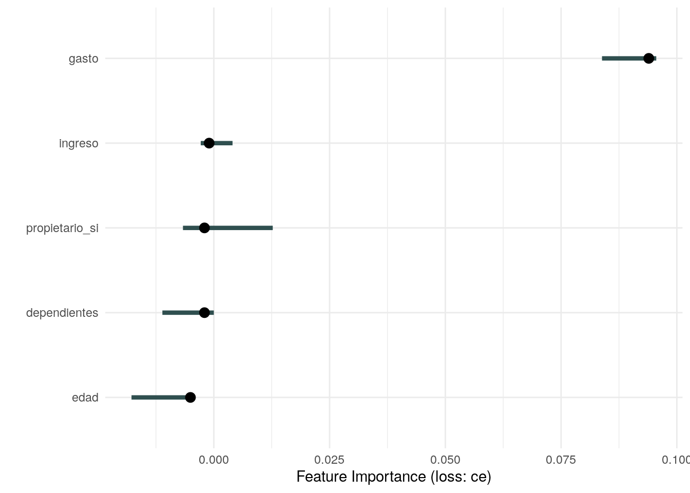
Se ve que, para esta red sin capas ocultas, la importancia se concentra en un solo predictor, gasto, que como vimos representa una fuga de información. Este diagnóstico es útil en general, y aunque no tan dramático como este ejemplo, puede señalar cuáles variables es importante considerar con cuidado.
Es importante considerar también el efecto de variables asociadas a grupos protegidos, y de ser necesario, examinar con cuidado cómo afectan las predicciones.
Modelos parsimoniosos, que usan menos atributos, facilitan el análisis, el mantenimiento del flujo de datos, y reducen exponernos a problemas de fugas o efectos indeseables.
Explicación de predicciones
Para explicar predicciones individuales se pueden usar los valores de Shapley (Molnar (2019)), (Lundberg and Lee (2017)). Estas gráficas indican la contribución asignada de cada atributo a una predicción individual, bajo la idea de considerar efectos marginales sobre la predicción dependiendo de la presencia o ausencia de otros atributos. Las contribuciones obtenidas suman la diferencia que hay entre la predicción particular y la predicción promedio.
Pueden examinarse también promedios a lo largo de grupos de interés.
Considérese el ejemplo de factores para detectar una enfermedad del corazón en el estudio de Sudáfrica que vimos en este ejemplo
modelo_sa <- sa_boosted$fit
sa_entrena_x <- sa_entrena %>% dplyr::select(-enf_coronaria)
predict_fun <- function(object, newdata){
new_data_x = xgb.DMatrix(data.matrix(newdata), missing = NA)
results<-predict(modelo_sa, new_data_x)
return(results)
}
predictor <- Predictor$new(modelo_sa, data = sa_entrena_x, y = sa_entrena$chd ,
type = "prob", predict.function = predict_fun)## Warning: Unknown or uninitialised column: `chd`.# el caso de interés es el caso 15
valores_shapley <- Shapley$new(predictor, x.interest = (sa_entrena_x[15, ]))
valores_shapley$plot() + theme_minimal()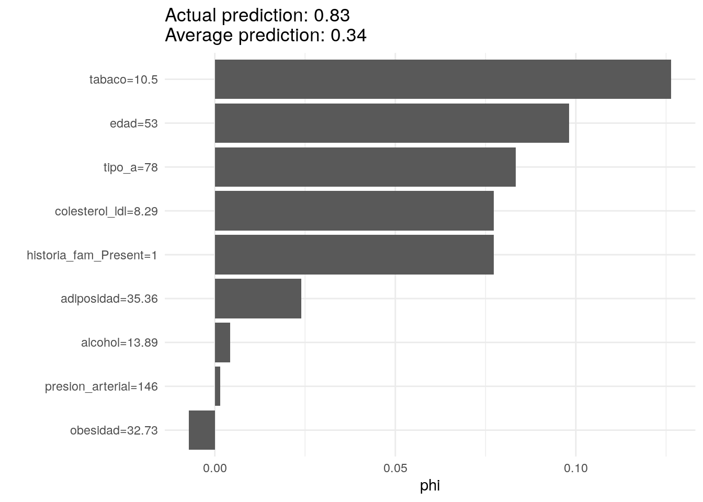
En este caso, varias medidas contribuyen positivamente a la probabilidad de enfermedad del corazon, como es uso de tabaco, edad, y mediciones de colesterol. Estas constribuciones explican la probabiidad tan alta de este individuo particular.
En contraste, la siguiente persona está cerca del promedio, aumentando positivamente la probabiidad la edad y medida de colesterol, pero negativamente el no uso de tabaco y ninguna historia familiar de diabetes:
# el caso de interés es el caso 24
valores_shapley <- Shapley$new(predictor, x.interest = (sa_entrena_x[24, ]))
valores_shapley$plot() + theme_minimal()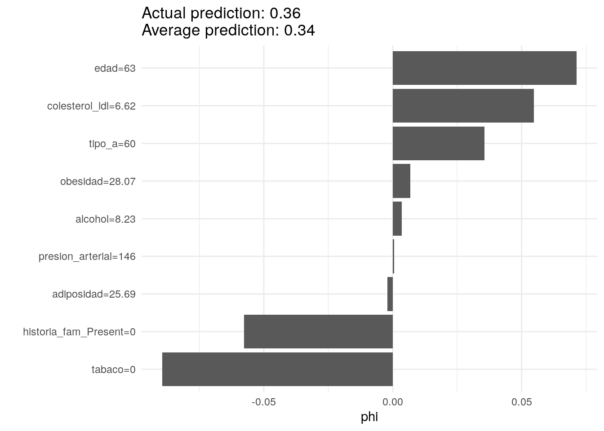
Observación: igual que en el modelo y en las gráficas de dependencia parcial que se discutieron anteriormente, estos coeficientes no deben interpretarse de manera causal (por ejemplo: es necesario bajar el colesterol para estos dos individuos). Esta es la información que usa el modelo para construir la predicción a partir de la predicción promedio sobre la población.
Se pueden calcular los valores de shapley para dos grupos de edad, por ejemplo.
Datos accesibles en http://archive.ics.uci.edu/ml/datasets/heart+Disease↩
Datos y más información accesible en http://www.liacs.nl/~putten/library/cc2000/data.html.↩